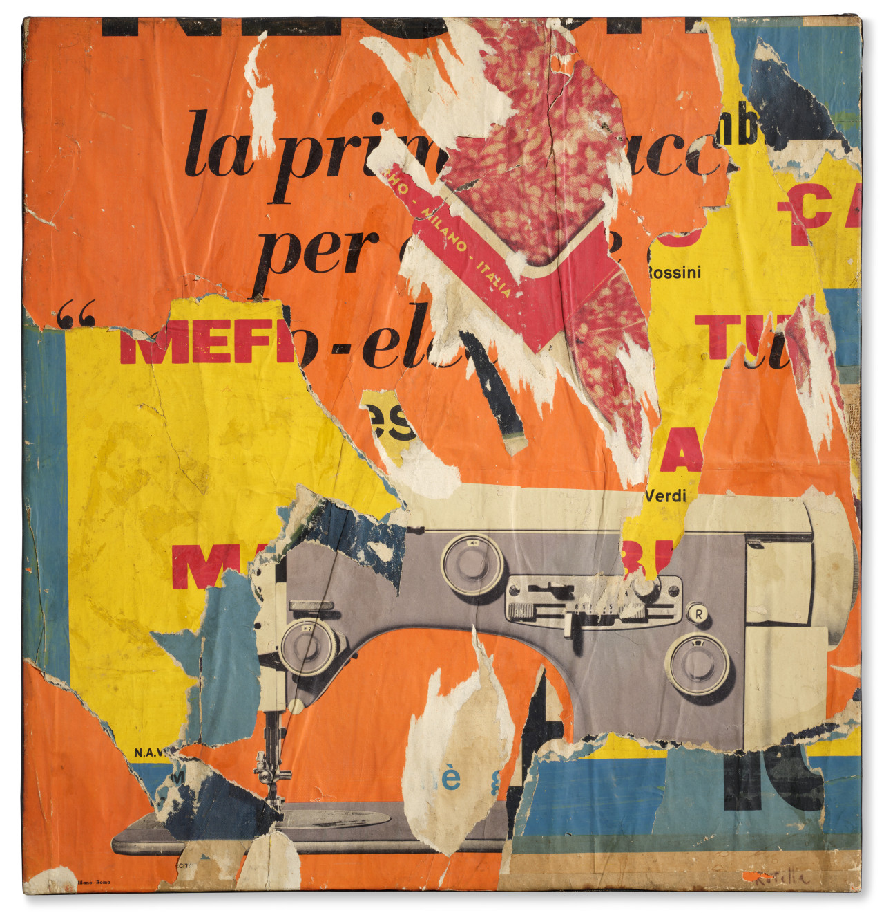
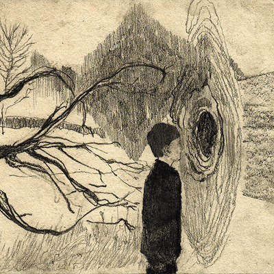
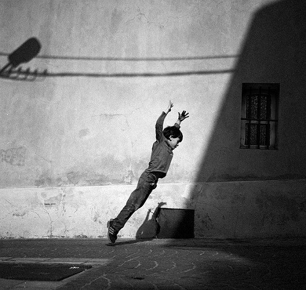

+ Képző
Új szót alkot. A szófajt is megváltoztathatja.
hős → hősiesolvas → olvasás
✳ A FEJEDBEN KEZDŐDIK A KALAND
Hősök, érzések, csavaros mondatok.
Szedd szét. Értsd meg. Rakd össze újra.
Ez itt a te magyar-műhelyed.
Nem kell tökéletesnek lenned. Csak kíváncsinak.



01 / IRODALMI JÁTÉKOK
Rövid körök. Jó kérdések.
feladat · 6 irodalmi játék · szabad feladatszám.
KÜLÖN MŰHELY / MAGYAR NYELV
500 feladat a toldalékokról.
Képző · jel · rag · szóelemek.
A kör hossza rajtad áll.
Az irodalomtól külön, a saját tempódban. Válassz feladattípust, vagy indíts vegyes kört mind az 500 példából!
300 toldalékfelismerés + 150 szóelemelemzés + 50 összehasonlítás. A szám feladatokat jelent: ugyanaz a szótő több toldalékos alakban is szerepelhet.
NYELVTANI KISOKOS
Új szót alkot. A szófajt is megváltoztathatja.
hős → hősiesNyelvtani jelentést tesz hozzá: többes szám, múlt idő, fokozás…
hős → hősökA mondatbeli kapcsolatot, szerepet jelöli; az igén számot, személyt is kifejezhet.
vár → várbanGyakori sorrend: szótő + képző + jel + rag. Nem kell mindegyiknek szerepelnie. A kötőhangzót az alábbi egyszerűsített feladatokban a toldalékkal együtt mutatjuk.
További kapaszkodó: a szótő változhat (kéz → kezek, alma → almák). A feladatok a kötőhangzót a toldalékkal együtt mutatják. A teljes 500-as bank nem 500 külön szótövet jelent.
02 / A TANKÖNYVED NYOMÁBAN
A Hősök az irodalomban fejezet teljes leckesora. Olvass az NKP-n, aztán próbáld ki, mi maradt meg!
A lecketérkép minden leckét követ; a saját feladatok a fő fogalmakat és történetbeli összefüggéseket gyakoroltatják, nem a tankönyv minden részletét.
03 / HA ÖSSZEKUSZÁLÓDIK
Milyen alapvető módon szól hozzánk?
Melyik kisebb műcsoportba tartozik?
Hogyan szerveződik a szöveg?
Kattints egy cédulára! Mindegyikhez találsz játékot és tankönyvi példát.
Akadály vagy feladat, amelyet a hősnek le kell küzdenie, hogy közelebb jusson céljához.
Példa: A hősök útja
Tankönyvi lecke ↗Eredetileg szentek életét, csodás tetteit példaként bemutató történet; később világi témája is lehetett.
Példa: Arany: Szent László
Tankönyvi lecke ↗Rövid, tömör lírai költemény. Az ókorban feliratként, sírfeliratként is használták; hangneme és témája változatos lehet.
Példa: A thermopülei hősök sírfelirata
Tankönyvi lecke ↗A napló személyes feljegyzésekből épül; az útleírás az utazás tapasztalatait rögzíti. A két megközelítés találkozhat.
Példa: Csui!…
Tankönyvi lecke ↗Az eredet a különbség: a népballada hagyományban él, egyéni szerzője ismeretlen; a műballadának ismert alkotója van.
Példa: Kőmíves Kelemenné ↔ Mátyás anyja
Tankönyvi lecke ↗A tömör elbeszélés részleteket hagy ki. A történet kapcsolatait az olvasó következteti ki. Nem napszakot jelent!
Példa: Mátyás anyja
Tankönyvi lecke ↗Több nép történeteiben megjelenő alapminta, amely terjedése során változatokban él tovább.
Példa: Lúdas Matyi
Tankönyvi lecke ↗Visszatérő mozzanat, amely tartalmilag vagy szerkezetileg kapcsolja össze a mű részeit.
Példa: A visszaverések a Lúdas Matyiban
Tankönyvi lecke ↗A RITMUS KÓDJA
Az időmértékes verselés a rövid és hosszú szótagok szabályos rendjére épül. A hosszú magánhangzó hosszú szótagot alkot; rövid magánhangzó után több vagy hosszú mássalhangzó is hosszúvá teheti a szótagot. A betűk helyett a hangokat figyeld, a szóhatáron át is!
A hexameter hat verslábból áll. A tanult alapképletben az ötödik daktilus, az utolsó spondeus vagy trocheus. A sorvégi szótag időértéke szabad.
04 / NINCS EGYETLEN JÓ VÁLASZ
Az önazonosság jó gondolkodási kapaszkodó, nem a műnemek tankönyvi meghatározása. Egy lírai beszélő el is rejtheti magát, egy drámai hős rosszul is dönthet.
A walesi bárdokhoz kapcsolódó gondolatkísérlet. A szöveged csak ebben a böngészőben marad.
A tartalmi ellenőrzés alapja az NKP Irodalom 6. (A), NAT 2020 — I. Hősök az irodalomban fejezetnyitója és 1–13. leckéje. A leckék közvetlen linkjei a fenti térképen, a feladatok tankönyvi háttere a javításban található. A linkeket a tankönyv tartalomjegyzéke alapján pontosítottuk. Ellenőrzés: 2026. november 15.
A kollázsokhoz felhasznált képeket a felhasználó biztosította a TUMBLI_4_KREA gyűjteményből. A képek vizuális hangulati elemek, nem a tankönyv illusztrációi.
A magyarázatok, rövid összefoglalók és kérdések önálló megfogalmazások. Az oldal nem másolja a tankönyv szövegeit, képeit vagy feladatsorait, és nem hivatalos NKP-kiadvány. A lecketérkép az egész első fejezetet követi, a gyakorlás a fő fogalmakra összpontosít. A Toldi a második fejezet része, így itt a Lúdas Matyi a verses epika fő példája.
A balladát a fejezethez igazodva három műnem jegyeit egyesítő, átmeneti műfajként mutatjuk be. Az önazonossághoz kapcsolódó kérdések értelmezési kapaszkodók, nem műnemi meghatározások. A nyelvtan külön gyakorlóblokk; háttere az NKP Magyar nyelv 5–6. tanári kézikönyv szóelemekről szóló része. A kötőhangzókat a feladatok egyszerűsítve a toldalékkal együtt mutatják.